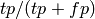
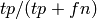

scikits.learn.metrics.precision_recall_fscore_support¶
- scikits.learn.metrics.precision_recall_fscore_support(y_true, y_pred, beta=1.0, labels=None)¶
Compute precisions, recalls, f-measures and support for each class
The precision is the ratio  where tp is the number of true positives and fp the number of false positives. The precision is intuitively the ability of the classifier not to label as positive a sample that is negative.
The recall is the ratio  where tp is the number of true positives and fn the number of false negatives. The recall is intuitively the ability of the classifier to find all the positive samples.
The F_beta score can be interpreted as a weighted harmonic mean of the precision and recall, where an F_beta score reaches its best value at 1 and worst score at 0.
The F_beta score weights recall beta as much as precision. beta = 1.0 means recall and precsion are as important.
The support is the number of occurrences of each class in y_true.
Parameters : y_true : array, shape = [n_samples]
true targets
y_pred : array, shape = [n_samples]
predicted targets
beta : float, 1.0 by default
the strength of recall versus precision in the f-score
Returns : precision: array, shape = [n_unique_labels], dtype = np.double :
recall: array, shape = [n_unique_labels], dtype = np.double :
f1_score: array, shape = [n_unique_labels], dtype = np.double :
support: array, shape = [n_unique_labels], dtype = np.long :
References